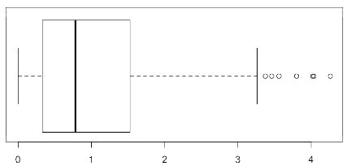

Capítulo 3 Estadística descriptiva de datos numéricos univariantes
Lo primero que hay que hacer cuando se quiere hacer un análisis estadístico sobre un conjunto de datos es entenderlos. Para ello hay que hacer algunos cálculos básicos y mirar algunas gráficas. A esto se llama estadística descriptiva. Cuanto mejor se entiendan los datos, mejor se podrá decidir qué técnicas y pruebas estadísticas hay que usar y cuánto nos podemos fiar de los resultados. Veamos las bases de la estadística descriptiva de una variable numérica.
3.1 Tipos de datos
Una variable puede ser de dos tipos. Si la variable se tiene que representar mediante un número y puede operarse, tenemos una variable cuantitativa o numérica. Si en cambio se representa mediante un concepto o término y no puede operarse con ella, es de tipo cualitativo o factor. Ejemplos típicos de variables numéricas son el peso, la altura, la temperatura, la resistencia… Ejemplos típicos de los factores son el color de ojos o de pelo, el sexo o estados varios (casado, soltero, viudo, divorciado; funcionando, parado, estropeado).
Las variables cuantitativas pueden ser continuas o discretas. En una variable discreta sól se pueden tomar ciertos valores y no los intermedios. Por ejemplo el número de hermanos es discreto, pues puede ser 0, 1, 2… pero no puede tomar ningñun valor entre 1 y 2: no puede ser 1,7.
La temperatura o el peso son continuas, pues pueden tomar cualquier valor. Uno puede medir 173 cm o 174 cm o cualquier valor entre medias. Es cierto que normalmente no usamos estos valores intermedios, no decimos que una persona mide 173,2 cm, pero eso no es una característica de la variable, sino de la precisión que hemos elegido para nuestra variable. Es una decisión que podemos cambiar cuando queramos.
Como hemos dicho, una variable cualitativa o factor representa conceptos o términos. Los diferentes valores que puede tomar un factor se llaman los niveles del factor. Por ejemplo la variable color de ojos puede tomar los niveles “azul”, “verde”, “marrón” y “negro”. A veces es una decisión subjetiva cuáles son los niveles que puede tomar un factor: alguno puede opinar que existen los ojos grises, y otros pueden opinar que no.
A veces una variable cualitativa puede representarse mediante un número, pero no es un número, pues no se puede operar con él. Por ejemplo tenemos los meses o años: 2 (febrero) + 3 (marzo) no es 5 (mayo). El año 1914 más el 1930 no es el año 3844. Por lo tnato el mes o el año, aunque lo representemos mediante nñumeros, no son variables cuantitativas, sino cualitativas.
A veces nos conviene pasar una varaible cuantitativa a cualitativa. Esto lo hacemos agrupando los valores numéricos en intervalos. Por ejemplo si agrupamos los niveles de renta en “Menos de 15 000”, “Entre 15 000 y 30 000”, “Entre 30 000 y 60 000” y “Más de 60 000” hemos convertido de forma objetiva los números de la variable numérica, en términos que podríamos llamar “Muy bajo”, “Bajo”, “Medio” y “Alto”.
En lo que resta de este capítulo vamos a trabajar con variables numéricas. En un capítulo posterior miraremos la estadística descriptiva de las variables cualitativas.
3.2 Medidas de centralidad y dispersión
La media es la medida más conocida que nos da una idea de valor “central”, valor que representa al “centro” de los datos. Todos sabemos que es la suma de todos los datos dividido por el número de datos. Si los datos son poco problemáticos (ya definiremos más adelante que significa esto), la media es una buena medida del centro de los datos.
Otra medida, menos conocida, es la mediana. Es, de entre los valores de los datos, aquel que hace que la mitad sean menores que él y la mitad sean mayores. Lo podemos calcular ordenando los datos y cogiendo el del medio. Si tenemos 7 datos, 4, 7, 13, 8, 10, 13 y 3, los ordenamos y cogemos el cuarto. Así tenemos 3 por debajo y 3 por encima:
3, 4, 7, 8, 10, 13, 13.
En este caso la mediana es 8. ¿pero qué pasa si tenemos 8 datos? Ningún dato deja tantos por encima como por debajo. En ese caso se define la mediana como la media aritmética de los dos del medio. Si a los datos anteriores añadimos un 16, tenemos:
3, 4, 7, 8, 10, 13, 13, 16.
La mediana sería en este caso 9, la media de 8 y 10.
Una extensión de la mediana son los cuartiles. El primer quartil (o Q1) es un valor que es mayor que el 25% de los datos. El segundo quartil sería la mediana, y el tercer quartil (o Q3) es un valor que es mayor que el 75% de los datos. A diferencia de la mediana, no hay una definición clara de qué hacer si no coincide con un dato. No es tampoco demasiado importante. En nuestro ejemplo (con 8 datos) diremos que el Q1 es cualquier valor entre 4 y 7, y que el Q3 vale 13.
La mediana es mucho más robusta que la media. Un solo valor muy gande o pequeño hace que la media cambie mucho. Esto no pasa con la mediana. Supongamos que partimos estamos mirando el número medio de seguidores de Twitter de la población. Cogemos una muestra de 9 twiteros y supongamos que nos salen que tienen 28, 31, 75, 90, 105, 201, 250, 400 y 586 seguidores. Esto nos da una media de 172,9 seguidores y una mediana de 105 seguidores. Algo diferente pero podemos decir que ambos valores son representativos del conjunto. Pero cogemos al décimo seguidor al azar y sale que es Donald Trump (@realDonaldTrump) que tiene (en el momento de escribir este documento) más de 25 millones de seguidores. Pongamos que tiene 25 millones y medio. La mediana pasa a ser 153, que podemos seguir considerando representativa de la mayoría de la población. En cambio la media pasa a valer más de dos millones y medio y ya no representa a nadie.
A este valor tan alejado de todos se le llama un valor atípico (outlier en inglés). Como ya vemos en este ejemplo influyen mucho en el estudio de los datos.
La media o la mediana no nos dice todo sobre los datos. Por ejemplo, las muestras (5, 7, 9) y (2, 7, 12) tienen la misma media, pero la segunda muestra está mucho más dispersa que la primera. Para medir esta dispersión usamos la desviación típica. No daremos aquí la definición (la podéis encontrar en Wikipedia, si queréis) pero sí la idea general. La desviación típica nos da una idea de cuánto están alejados los datos de la media de la muestra. Si es grande, es que están muy alejados; si es pequeña, es que están casi todos concentrados alrededor de la media.
La desviación típica (generalmente representada por \(\sigma\)) nos sirve de unidad. En muchas distribuciones más o menos dos tercios de los datos están a menos de una desviación típica (o \(\sigma\)) por encima o por debajo de la media (los datos están dentro de [media \(- \sigma\), media \(+ \sigma\)]; el 95% de los datos están a menos de dos desviaciones típicas (o \(2 \sigma\)) por encima o por debajo de la media (dentro de [media \(- 2\sigma\), media \(+ 2\sigma\)]); y el 99% de los datos está a menos de \(3 \sigma\) por encima o por debajo de la media (dentro de [media \(- 3\sigma\), media \(+ 3\sigma\)]). Si nos dicen que el peso de un ganso concreto es 300 g por encima de la media no sabemos si es mucho o poco. Pero si nos dicen que está a \(0.3\sigma\) por encima sabemos que es prácticamente un ganso medio. En cambio, si nos dicen que está a \(1.8\sigma\) de la media, sabemos que es un ganso muy grande.
Para calcular estas medidas en R tenemos varias funciones. Sea
datos el vector con nuestros datos. La función
mean(datos) nos calcula la media. La función
median(datos) nos calcula la mediana. La función
summary(datos) nos hace un resumen de los datos, dándonos la
media, la mediana, los cuartiles y los valores máximos y mínimos. La
función sd(datos) nos calcula la desviación típica. Veamos
un ejemplo.
## [1] 2.042857## [1] 2## Min. 1st Qu. Median Mean 3rd Qu. Max.
## 0.200 1.250 2.000 2.043 2.700 4.200## [1] 1.330234Estas medidas de centralidad y dispersión nos dan una cierta idea de cómo pueden ser los datos. Pero para entenderlo bien, necesitamos verlos de forma gráfica.
3.3 Gráficas para datos cuantitativos
Las gráficas son una parte fundamental de la estadística descriptiva. Los números están bien, pero una gráfica es más informativa. Vamos a ver las cuatro gráficas fundamentales para variables numéricas: diagramas de puntos, histogramas, diagramas de tallo y hojas y diagramas de cajas.
Diagrama de puntos. Un diagrama de puntos representa
todos los puntos de nuestros datos. Como sólo hay una variable, es un
gráfico unidimensional, fácil de crear e interpretar. En R se obtiene
esta gráfica con la función stripchart(). Podemos ver
un ejemplo del peso de 57 personas en la figura siguiente.
Cada cuadradito representa un dato. Podemos ver si están más juntos o dispersos o si se “apelotonan” alrededor de un punto o varios. En la figura se ve que están bastante dispersos y parece que se apelotonan un poco alrededor del 50.
Lo mejor del diagrama de puntos es que puedes ver cada dato. Naturalmente esto sólo es posible si tenemos una cantidad pequeña o modarada de datos. Si tenemos miles, es obvio que no veremos nada.
Histogramas. Un histograma es una gráfica bidimensional para representar nuestra variable numérica. En el eje X tenemos el valor de los datos, mientras que en el eje vertical tenemos la frecuencia, es decir, cuántos datos tenemos en cada intervalo. En la figura siguiente vemos un histograma, con los mismos datos del peso de 57 personas.
Vemos que para crear el histograma se divide los posibles valores de
la variable en intervalos. En este caso son intervalos de 5 kg: de
40 Kg a 45 Kg, de 45 Kg a 50 Kg, etc. Podemos leer del histograma que entre 40 Kg y 45 Kg hay dos personas, mientras que entre 65 Kg y 70 Kg hay 5. Se confirma que hay un montículo alrededor del 50. R crea histogramas con la función hist().
Un histograma es muy útil y se usa mucho. Lo malo es que necesita muchos datos. Fijaos que hay varios intervalos con 5 o menos personas. Una sola persona que pese unos cientos de gramos más o menos y que por eso pase de un intervalo al contiguo hace que el aspecto del histograma cambie mucho. Y lo mismo pasa por cómo se escogen los intervalos: si en vez de (40, 45); (45,50); (50,55) etc. hubiéramos cogido (41,46); (46,51); etc. podría dar lugar a un histograma muy diferente. Cuantos menos datos tenemos, menos fiable es el histograma. Y por debajo de unos 30 datos, se recomienda ni siquiera hacerlo.
Diagrama de tallo y hojas. Un diagrama de tallo y hojas es una especie de histograma hecho a mano. Escogemos de cada dato las dos cifras más significativas, la de la izquierda es el tallo y la de la derecha es la hoja. Por ejemplo si tenemos 532, 574, 533, 591, 603, 617 y 648, la cifra de la izquierda es el tallo (5 en los primeros, 6 en los últimos) y el siguiente (redondeado) serían las hojas (3, 7, 7, 9, 0, 2 y 5). Ahora el diagrama sería:
5|3779
6|025Como en el histograma, vemos que en el intervalo 500 a 600 tenemos 4 datos y en el de 600 a 700 tenemos 3. Lo que permite este diagrama, que no permite el histograma, es ver el valor de cada elemento. Esto nos permite detectar cosas interesantes. Supongamos el siguiente diagrama:
3|2256788999
4|1389
5|000112356Parece a primera vista que hay muchos “3” y “5” y pocos “4”. Pero podemos ver que hay varios “3|9” y “5|0” lo que nos hace concluir que hay un número similar de “3”, “4” y “5” y que la diferencia aparente es pura casualidad. Esto no se puede apreciar en un histograma.
La instrucción de R para crear un diagrama de tallo y hojas es
stem():
Peso = c(42, 45, 45, 45, 45, 45, 46, 47, 47, 47, 48, 49, 49, 49, 49, 50,
50, 50, 52, 53, 54, 54, 55, 55, 55, 55, 56, 56, 57, 57, 58 , 60, 62, 62,
62, 63, 63, 64, 64, 65, 66, 66, 67, 69 , 70, 72, 74 , 75, 76, 77, 77, 78,
80, 81, 81, 81, 82)
stem(Peso)##
## The decimal point is 1 digit(s) to the right of the |
##
## 4 | 2
## 4 | 55555677789999
## 5 | 0002344
## 5 | 555566778
## 6 | 02223344
## 6 | 56679
## 7 | 024
## 7 | 56778
## 8 | 01112Fijaos que la salida empieza con la frase “The decimal point is 1 digit(s) to the right of the |”. Con sólo “4|2” no sabemos si representa 4,2 o 0,00042 o 4200. Esta frase nos indica que es “42”
Diagrama de cajas. El diagrama de cajas (o de caja y
bigotes) parte de los cuartiles y la mediana. Para construirlo
debemos primero calcular la mediana, Q1 y Q3. Después calculamos el
rango intercuartílico que es la resta Q3 – Q1. La caja la
delimitan Q1 y Q3, con una raya que indica Q2. A veces se
añade un punto o un diamante que representa la media. Los bigotes llegan
hasta el dato más alejado a la caja pero que esté a menos que 1,5 veces el
rango intercuartílico. Los datos que están más allá de los bigotes se
representan como círculos y los podemos considerar datos atípicos
potenciales. En la figura siguiente vemos un diagrama de cajas
creado con la función boxplot() de R.
Un diagrama de cajas nos permite ver bien la asimetría, tanto de la parte central como de los extremos, y si hay algún valor atípico.
3.4 Análisis de los datos
Cómo hemos dicho, miramos los datos para entenderlos mejor. ¿Pero entender el qué? Empecemos por estudiar tres características esenciales: la modalidad, la simetría y la presencia de valores atípicos.
3.4.1 Modalidad
Si miramos un histograma, la modalidad es el número de picos que tenemos. Por ejemplo la figura siguiente nos muestra dos poblaciones unimodales.
Es cierto que vemos fluctutaciones pequeñas, pero eso son artefactos típicos de los histogramas y realmente, en ambos casos, sólo hay un pico, es decir, un modo.
En cambio en la figura siguiente vemos un histograma claramente bimodal.
Esta gráfica es de longitud de una muestra de hormigas y vemos que en nuestra muestra hay dos poblaciones, ya sea dos tipos de hormiga diferentes o dos castas de hormigas, obreras y soldados, de un mismo tipo.
La modalidad se puede ver con el histograma, el de tallo y hojas e incluso con el de puntos (donde cada modo se muestra como una aglomeración de puntos). Un diagrama de cajas no muestra esta característica. Hay que ir con cuidado de no confundir pequeñas fluctuaciones, como los de las gráficas unimodales de arriba, con los modos.
Que una variable sea unimodal significa que tenemos una población homogénea, con más o menos dispersión. Si además es simétrica, es muy fácil describir los datos: basta dar la media y la desviación típica.
Si la variable es bimodal, como la figura anterior, suele querer decir que tenemos dos poblaciones. No tiene mucho sentido dar un sólo conjunto de datos para ambas: supongamos que tenemos dos especies de hormigas muy distintas. Dar la “media de la longitud de las hormigas” es absurdo. En este caso es conveniente dividir las dos poblaciones (esto lo tiene que hacer un experto en hormigas o en la población bajo estudio) y estudiar cada uno por separado. Pero esto no siempre es posible: por ejemplo la talla y peso de la población de personas es bimodal ya que los hombres y las mujeres tiene alturas y pesos diferentes, pero si estamos diseñando los asientos de un tren o avión, no podemos tener asientos para hombres y asientos para mujeres y tendremos que considerar la población en conjunto.
3.4.2 Simetría
Ninguna variable real es exactamente simétrica, por lo tanto una leve asimetría es de esperar. Lo que da características propias a una variable es que sea moderada o fuertemente asimétrica, como es el caso de la figura siguiente.
En este caso la media es poco representativa de la población: sólo una fracción pequeña está cerca del valor medio. Normalmente la mediana (y los cuartiles) dan una información más reveladora. Otra cosa a tener en cuenta es que la desviación típica nos da poca información en una variable muy asimétrica ya que el “montículo” con más población quizá noesté dentro del rango media ± desviación.
Todas las gráficas nos permiten ver la asimetría: el histograma, el diagrama de puntos, el de tronco y hojas, pero el que lo muestra más claramente es el de cajas, en donde se ve si hay asimetría tanto en donde se encuentra la parte “central” de la población (dentro de la caja) como la más periférica (los bigotes). La figura siguiente nos muestra un diagrama de cajas de una variable claramente asimétrica y con valores atípicos

3.4.3 Valores atípicos
Al mirar unos datos a menudo puedes ver una gran mayoría que muestran unas características comunes, pero con uno o unos pocos que se alejan del grupo. Estos son los llamados valores atípicos (o outliers). Estos valores tiene una gran influencia en el cálculo de la media (en cambio no en el de la mediana), o a la hora de estimar la tendencia. Las loterías usan de estos valores extremos: un único gran premio hace que la media de lo que se puede obtener sea razonable (alrededor del 75% de lo apostado), mientras que lo más probable sea que no ganes nada.
Por eso hay que estudiar estos valores atípicos con detenimiento. A menudo son errores (hemos tecleado 190.5 en vez de 109.5, o tenemos medidas erróneas debido a un fallo de la batería). En este caso la solución es sencilla: se eliminan estos valores. En cambio otras veces son valores reales. En este caso se deben identificar y ya es cuestión del especialista (con nuestra ayuda) decidir qué hacer con ellos.
Hay dos gráficas donde los valores atípicos se ven muy bien: el diagrama de cajas y el diagrama de puntos. Se ven peor en histogramas y diagramas de tallo y hojas.
3.4.4 Problematicidad
El objetivo de la estadística es sacar pronósticos e inferencias a partir de los datos que nuestra muestra. Si los datos son muy “regulares” podemos tener una buena confianza en nuestros pronósticos e inferencias, pero si son muy irreguares, dudamos mucho más de nuestras deducciones. A veces se dice que tenemos “buenos datos” o “malos datos”, pero esto es erróneo: los datos son los que son, no son ni buenos ni malos. Aquí vamos a utilizar el término “problemático” para describir los datos. Si los datos son poco problemáticos, podemos tener bastante confianza en nuestras deducciones. Si son muy problemáticos, muy poca.
Otra manera de verlo es que si tenemos datos poco problemáticos y tomamos otra muestra, seguramente haremos las mismas deducciones con la segunda muestra que con la primera. Si son algo problemáticos, la segunda muestra puede ser diferente a la primera. Si son muy problemáticos, una segunda muestra puede parecerse muy poco a la primera, y sacaríamos conclusiones muy diferentes.
Aqui es donde entra enormemente la experiencia del estadístico, pero para empezar, con el estudio de la modalidad, asimetría y la presencia o no de valores atípicos, podemos sopesar si nuestros datos son o no problemáticos. Para ellos tenemos que mirar las medidas de centralidad y dispersión y todas las gráficas posibles. Si tenemos suerte los datos seran unimodales, simétricos y sin valores atípicos. Son datos nada problemáticos. El caso ideal es ver algo parecido a una campana de Gauss. En este caso una muestra pequeña nos bastará y las deducciones que hagamos serán bastante fiables.
Si tenemos peor suerte los datos serán bimodales, o asimétricos o tendrán algún valor atípico. En este caso nuestros datos son algo problemáticos. Necesitamos una muestra mucho mayor para tener unos resultados algo fiables.
El pero caso es si es multimodal, fuertemente asimétrico y con valores muy atípicos. Incluso con muestras muy grandes no nos podremos fiar gran cosa de nuestros resultados. En estos casos extremos, generalmente no podemos hacer deducción alguna a partir de los datos, aunque casi siempre lo intentaremos. Es esencial recordar que hay muchísima incertidumbre y cualquier deducción que hagamos puede estar muy alejado de la realidad.